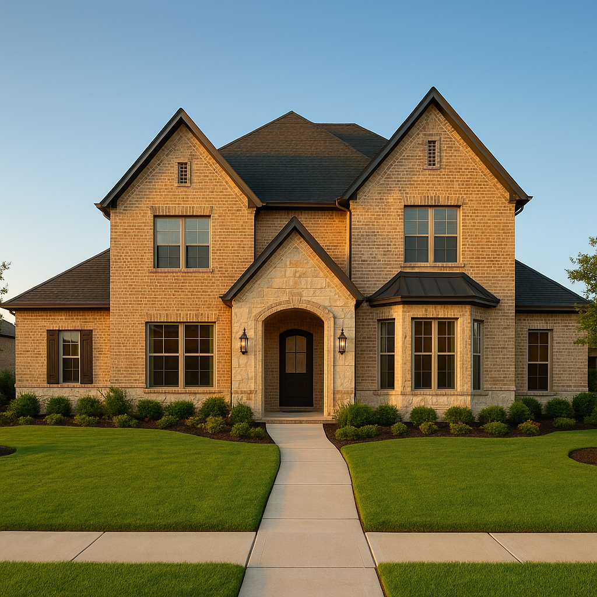

If you're buying a new construction home in Frisco, Prosper, McKinney, or Rockwall in 2026, you've probably seen a builder offering a "2-1 rate buydown" as an incentive. I'm Bond Peter Njoku (NMLS #2670329), and while a 2-1 buydown can be a genuinely valuable tool, I've seen buyers get hurt by accepting a builder's preferred lender incentive without doing the math. This guide gives you the LO's perspective — what the buydown actually saves you, when it makes sense, and when closing cost credits are a smarter take.
I also want to cover something no real estate agent's blog will tell you: how to stack a TSAHC down payment assistance grant on top of a builder 2-1 buydown, and how DFW first-time buyers in communities like Prosper Star Trail and McKinney Trinity Falls are using this combination to make high-priced new builds actually pencil out.
What is a 2-1 buydown and how does it work on new construction?
A 2-1 buydown is a temporary interest rate reduction funded by the builder (or seller) at closing. The structure:
- Year 1: Rate reduced by 2 percentage points below your note rate
- Year 2: Rate reduced by 1 percentage point below your note rate
- Year 3 through 30: Full note rate applies for the remainder of the loan
The builder deposits funds into a buydown escrow account at closing. Each month, the escrow account makes up the difference between your reduced payment and the full-rate payment. You pay less; the escrow covers the rest. When the escrow runs out at the end of year 2, you pay the full note rate. The buydown is permanent — it doesn't "convert" to anything. You simply start paying the note rate you signed up for.
2-1 buydown payment savings: Frisco $475K example
Here's the full payment math on a $475,000 new construction home in Frisco, Collin County. Current note rate: 7.0% (30-year conventional). Loan amount at 5% down: $451,250.
| Period | Rate | Monthly P&I | Monthly Savings vs Year 3 | Cumulative Savings |
|---|---|---|---|---|
| Year 1 (months 1-12) | 5.0% | $2,421 | $739/mo | $8,868 |
| Year 2 (months 13-24) | 6.0% | $2,704 | $456/mo | $5,472 / $14,340 total |
| Year 3+ (month 25-360) | 7.0% | $3,160 | — | — |
| Total buydown savings (years 1-2) | ~$14,340 | |||
| Estimated buydown cost to builder | ~$14,500-$15,000 | |||
Note: taxes and insurance not included in P&I above. Full PITI on this Frisco home: approximately $1,100/month for taxes (~2.4% Collin County) + $150/mo insurance = estimated PITI year 1 at $3,671/mo, PITI year 3 at $4,410/mo.
DFW new construction communities where 2-1 buydowns are common
In 2026, the following DFW master-planned communities are actively offering builder incentive packages that include rate buydowns:
- Prosper: Star Trail (DR Horton, Drees Custom, MainVue) and Windsong Ranch (David Weekley, Perry Homes, Trophy Signature) — entry $450K-$600K range, builder incentives up to $20K
- Frisco: Fields (Toll Brothers, Shaddock, American Legend) and Villages of Creekwood — priced $480K-$700K, incentive packages vary by spec vs. to-be-built
- McKinney: Trinity Falls (DR Horton, Meritage, David Weekley) — $400K-$550K range, strong DR Horton buydown packages on quick-move-in homes
- Rockwall: Shores at Lake Ray Hubbard and Stone Creek Ranch (Highland Homes, Perry Homes) — $380K-$550K, great DSCR values for investors, 2-1 buydowns common on inventory homes
Quick-move-in (QMI) homes — already built and sitting unsold — are where the most aggressive buydown packages are found. A builder sitting on a finished $500K home carrying months of carrying costs is highly motivated to move it with a $15K incentive escrow.
Can I stack a TSAHC down payment assistance grant with a builder 2-1 buydown?
Yes — and this is the DFW move very few buyers know about. TSAHC Home Sweet Texas provides a 3-5% grant (no repayment required) that can be applied to down payment and/or closing costs on FHA and conventional loans. The builder's 2-1 buydown is a seller concession that funds a separate buydown escrow. These are different buckets — the TSAHC grant reduces your cash needed at closing, while the buydown reduces your payment in years 1 and 2.
Example: $475,000 Frisco new build, 5% down conventional, TSAHC 5% grant, builder 2-1 buydown:
- Down payment (5%): $23,750
- TSAHC 5% grant applied to down payment: $23,750 — covers 100% of down payment
- Closing costs (est.): $8,200
- TSAHC grant remainder applied to closing costs: covers $0 (the 5% of $475K = $23,750, all used for down payment)
- Builder 2-1 buydown funds: ~$14,500 (from builder's escrow — you don't pay this)
- Net cash from buyer at closing: approximately $8,200 in closing costs (subject to specific lender and TSAHC guidelines)
Important: TSAHC income limits apply (~$119,700 for Collin County in 2026). The grant is attached to a specific lender network — I can walk you through TSAHC-approved lenders who also offer competitive rates and accept builder incentive packages simultaneously.
When should I take closing cost credits instead of the buydown?
This is the LO question that most buyers never think to ask. If you're down payment constrained — meaning you're stretching to cover the 5-20% down payment and coming to closing light on reserves — a closing cost credit from the builder may serve you better than a 2-1 buydown.
| 2-1 Buydown ($14,500 value) | Closing Cost Credit ($14,500) | |
|---|---|---|
| Year 1 savings | $739/mo ($8,868/yr) | $0 |
| Year 2 savings | $456/mo ($5,472/yr) | $0 |
| Year 3+ payment | Full note rate | Full note rate |
| Cash needed at closing | Full closing costs | Reduced by $14,500 |
| Best for | Buyers who can handle closing costs but want lower initial payment | Buyers who are cash-constrained at closing |
If you're tight on cash, taking the closing cost credit may let you close at all — while the 2-1 buydown saves you money only if you had enough to close in the first place. A good LO runs both scenarios with actual numbers before you commit.
Can I use FHA, VA, or USDA with a 2-1 buydown on new construction?
Yes — with caveats:
- FHA: Builder concessions (including the buydown escrow) count toward the seller concession limit of 6% for LTV 90%+. A $475K FHA purchase allows up to $28,500 in seller concessions — a $14,500 buydown fits easily.
- VA: Seller concessions capped at 4% for "prescribed" items (points, escrow accounts). VA buyers should have their LO confirm the buydown structure with the lender before contracting.
- USDA: Seller concessions up to 6% allowed. Most DFW new construction areas (Forney, Royse City, Terrell) are USDA-eligible — a USDA + 2-1 buydown combo is available and powerful at $0 down.
- Conventional: Seller concessions up to 3% (LTV 75%+), 6% (LTV 75% or less). At 5% down (95% LTV), conventional concession limit is 3% — on a $475K home that's $14,250, which may be tight for a full 2-1 buydown plus other concessions.
Year 3 payment shock: how to prepare
The $609/month jump from year 2 to year 3 on a $475K Frisco purchase is real. Here's how to be ready:
- Qualify at the note rate. FHA and conventional underwriting requires you to qualify at the full 7.0% note rate — not the 5% year-1 rate. So if you were approved, you're already underwritten for year 3's payment.
- Bank the difference in years 1-2. Treat years 1-2 as a forced savings period. If you were going to pay $3,160/month anyway, deposit the $739/month difference into a HYSA during year 1 and $456/month during year 2. After 24 months you've built $14,340 in reserves — more than the full buydown value, sitting in your account.
- Plan for refinancing. If rates drop to the 6.0-6.5% range by 2028 (Fannie Mae's baseline forecast), refinancing to a lower conventional rate could keep your payment near the year-2 level permanently. The 2-1 buydown buys you two years to see whether rates decline enough to justify a refinance.
Frequently Asked Questions
What is a 2-1 buydown and how does it work on DFW new construction?
I'm Bond Peter Njoku (NMLS #2670329) and a 2-1 buydown is a builder-funded incentive that temporarily reduces your mortgage interest rate for the first two years. Year 1 is 2% below the note rate, year 2 is 1% below, and year 3+ is the full note rate. On a $475,000 Frisco home at 7.0%, year 1 P&I is $2,421/mo, year 2 is $2,704/mo, and year 3 is $3,160/mo. The builder funds the difference via an escrow account at closing — you don't pay extra for this. Call or text me at 469-545-7180 to analyze a specific builder offer.
Should I accept the builder's preferred lender to get the 2-1 buydown?
I'm Bond Peter Njoku (NMLS #2670329) and this is the most important question to answer before signing. Builder preferred lenders often attach the buydown to using their lender — but a higher base rate can cost more over 30 years than the buydown saves over 2. Get a Loan Estimate from the builder's lender AND from me before you decide. In my experience, the builder's lender sometimes wins on this scenario, sometimes doesn't — you won't know without comparing both. Call me at 469-545-7180 before making any preferred lender commitment.
Can I use a 2-1 buydown with FHA, VA, or USDA on a new construction home?
I'm Bond Peter Njoku (NMLS #2670329) and yes — 2-1 buydowns work with FHA, VA, and conventional loans. For FHA, builder/seller concession limits are 3-6% of purchase price depending on LTV, and the buydown escrow typically fits within those limits. VA allows concessions up to 4%. USDA allows up to 6%. The key is that the buydown escrow counts toward the concession limit — your LO needs to review the full incentive package against applicable limits before contracting. Call or text me at 469-545-7180 to structure this correctly for your loan type.
What happens in year 3 when the 2-1 buydown expires on a DFW new construction home?
I'm Bond Peter Njoku (NMLS #2670329) and on a $475,000 Frisco purchase at 7.0%, your year 1 P&I is $2,421/mo and year 3 jumps to $3,160/mo — a $739/month increase. You should have been underwritten at the full note rate, so if you were approved you should be able to handle it. The practical prep: save the monthly difference during years 1-2 as a buffer ($739/mo year 1 + $456/mo year 2 = $14,340 in reserves). And plan for a potential refinance if rates drop to the 6.0-6.5% range by 2028. Call me at 469-545-7180 to build the budget math before you commit.
Looking at a new build in Frisco, Prosper, McKinney, or Rockwall?
I'm Bond Peter Njoku (NMLS #2670329). Before you sign with a builder, let me run the 2-1 buydown math against the closing cost credit alternative — and show you whether TSAHC can stack on top to reduce your cash at closing. Call or text 469-545-7180, message me on WhatsApp, or start your pre-approval online.